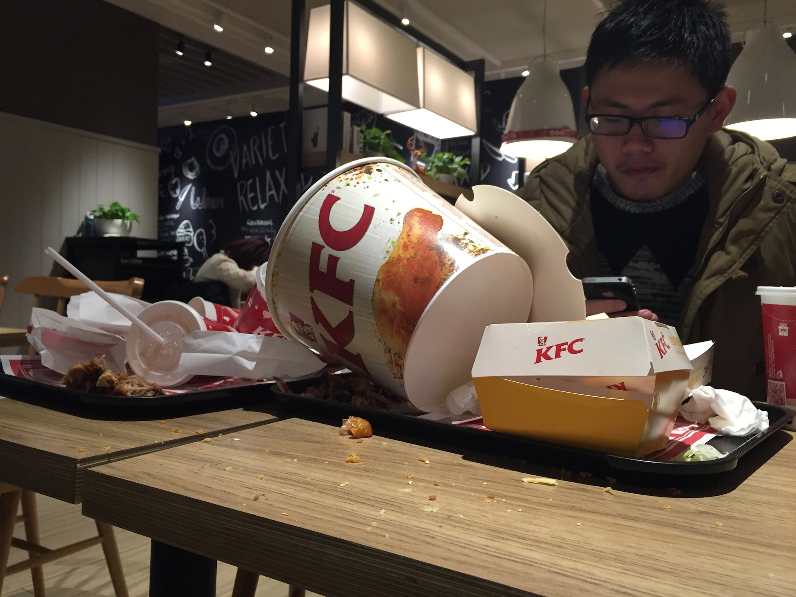

药丸， 真的是药丸
Posted on Wed 27 January 2016 in diary • Tagged with 里人格, 日记, 瞎扯
今天浪了一天， 不懂在干什么， 本来说要补一波概率论的， 结果看到第4章之后就开始乱翻书了， 然后统计学习基础那本书根本就没有看， 昨天看到『前列腺癌』的例子， 今天还是这个例子。 我很关心男性前列腺癌嘛啊？
感觉真的要完。
昨天和手榴弹去吃KFC， 作死的点了一个全家桶， 嘛， 作为肥宅， kfc当然要刷全家桶啦。
结果就是吃得快吐了， 肥宅力不足嘛。
人家A岛上的肥宅都是单刷全家桶， 结果我们两个人也搞不完一个， 主要是汉堡， 简直是想象不出的难吃， 等吃到汉堡的时候， 进入嘴巴的东西基本已经没有什么味道了， 可是汉堡的那个面包， 用蛋蛋的话来说叫做『面饼』， （里面夹着的东西叫做『肉饼』）， 真是难吃， 难吃， 难吃。
我偷偷留了两口没有吃完， 藏在汉堡盒子里面， 结果在战斗结束拍纪念照的时候被我弄了出来， 蛋蛋惊呼：『卧槽， 你作弊！居然还藏了半个面饼！』
纪念照是以冷漠的肥宅为主题， 通过拍摄在成堆的K记包装盒于凌乱的可乐杯后面低头玩手机的男人， 表现肥宅刷完全家桶事后玩手机的冷漠之情。

饭后， 天早已经全黑，走在回去的路上， 我早已直不起腰， 就算是还剩10秒的绿灯也只能放弃， 停下来等待。
世界一下子陷入了缓慢的行动之中。 在这样的节奏之中 ...
Continue reading